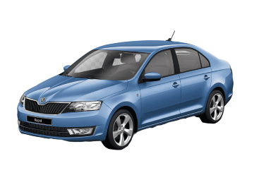

Historie modelu



Škoda Rapid je liftback nižší střední třídy představený automobilkou Škoda Auto v roce 2012. Svými rozměry vyplňuje mezeru v nabídce automobilky mezi Fabií a Octavií. Od roku 2013 je v nabídce automobilky také varianta prodloužený hatchback s názvem Škoda Rapid Spaceback.
Oficiální premiéra proběhla v září 2012 na Pařížském autosalonu, v Česku se následně začala prodávat 20. října 2012. Téhož roku se začala prodávat i v Evropě, o rok později v Číně a na začátku roku 2014 se dostala i na ruský trh. V Mladé Boleslavi se vyrábí spolu s technicky shodnou čtvrtou generací Seatu Toledo. Podobně jako u Škody Roomster je podvozková platforma vozu sestavena z upravených komponent stávajících modelů koncernu Volkswagen. Přední náprava pochází z Volkswagenu Polo 6R (A05, vyráběného od roku 2009). Škoda Rapid není postavena na nové platformě MQB z důvodu úspory nákladů, může být tudíž nabízena za nižší cenu.
Škoda Rapid je dodávaná na čínský trh v karosářské verzi sedanu se stupňovitou zádí (na rozdíl od evropské varianty liftbacku). V Číně se prodávají technicky a vzhledově spřízněné automobily VW Santana a VW Jetta.
Od konkurence ho mimo jiné odlišuje několik „simply clever“ (prostě chytrých) řešení podle sloganu značky. Škrabka na led je zakomponována v krytu hrdla palivové nádrže, oboustranný koberec v zavazadlovém prostoru, vyjímatelný koš na odpadky, držák na pití v bočnici sedadla a různé přihrádky, kapsy a háčky. Oproti technicky značně rozdílné indické verzi bude disponovat třeba velkým barevným dotykovým displejem s GPS nebo audio systémem se vstupem i na USB. Rapid s motorem 1,6 TDI CR/66 kW byl uveden v roce 2013 a s motorem 1,6 MPI/77 kW byl určen jen pro trhy mimo EU. Díky poměrně dlouhému rozvoru a širšímu rozchodu zadních kol než předních má vůz jisté jízdní vlastnosti, které jsou na špičce segmentu.
V roce 2017 byl Rapid faceliftován. Dostal upravené přední světlomety a masku, do které lze objednat také low bi-xenonové světlomety s LED páskem. Přidány byly i asistenční systémy. V kabině byla mírně upravena palubní deska, zejména výstupy vzduchu. Nově je základní motor 1.2 MPI nahrazen motorem 1.0 TSI o výkonu 70 kW. Z nabídky zcela vypadl motor 1.2 TSI, který ustoupil již zmíněnému tříválci 1.0 TSI. V nabídce také přibylo šest nových typů kol.
Motory
Model Rapid nabízel převážně menší benzínové a naftové turbomotory. Má pouze jeden atmosférický benzínový motor
Škoda Rapid

| typ motoru |
roky výroby |
výkon |
| 1,0 TSI | 2017 - 2019 | 70KW |
| 1,0 TSI | 2017 - 2019 | 81KW |
| 1,2 MPi | 2012 - 2015 | 55KW |
| 1,2 TSI | 2012 - 2015 | 63KW |
| 1,2 TSI | 2015 - 2019 | 66KW |
| 1,2 TSI | 2012 - 2015 | 77KW |
| 1,2 TSI | 2015 - 2019 | 81kW |
| 1,4 TSI | 2015 - 2021 | 90KW |
| 1,4 TSI | 2014 - 2021 | 92KW |
| 1,4 TDI | 2015 - 2019 | 66KW |
| 1,6 TDI | 2013 - 2015 | 66KW |
| 1,6 TDI | 2012 - 2019 | 77KW |
| 1,6 TDI | 2015 - 2019 | 85KW |
Škoda Rapid Spaceback

| typ motoru |
roky výroby |
výkon |
| 1,0 TSI | 2017 - 2019 | 70KW |
| 1,0 TSI | 2017 - 2019 | 81KW |
| 1,2 MPi | 2013 - 2015 | 55KW |
| 1,2 TSI | 2013 - 2015 | 63KW |
| 1,2 TSI | 2015 - 2019 | 66KW |
| 1,2 TSI | 2013 - 2015 | 77KW |
| 1,2 TSI | 2015 - 2019 | 81kW |
| 1,4 TSI | 2015 - 2021 | 90KW |
| 1,4 TSI | 2014 - 2021 | 92KW |
| 1,4 TDI | 2015 - 2019 | 66KW |
| 1,6 TDI | 2013 - 2015 | 66KW |
| 1,6 TDI | 2013 - 2019 | 77KW |
| 1,6 TDI | 2015 - 2019 | 85KW |
recenze